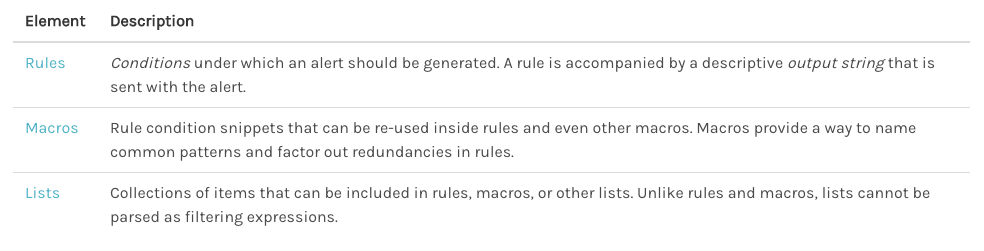
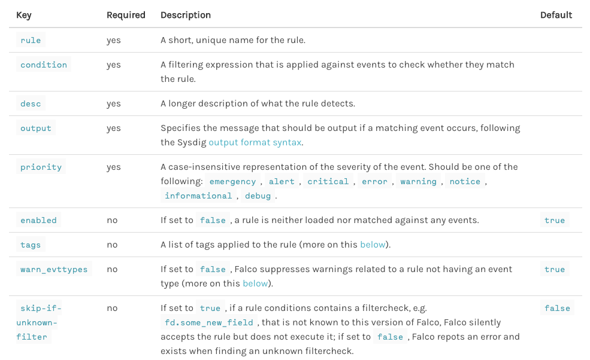
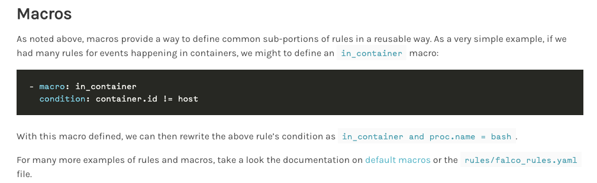
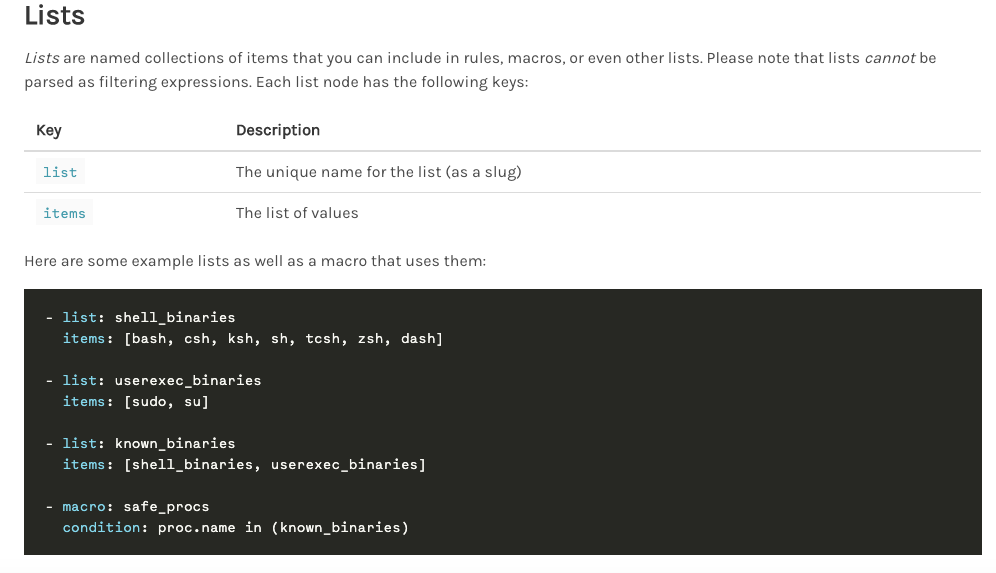
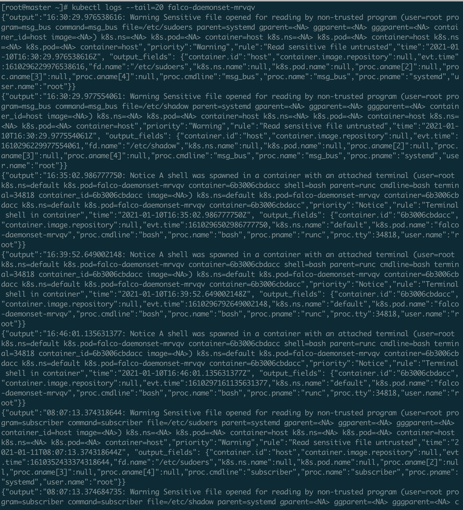

一、缘起
云原生大大改变了原有的软件部署结构，容器、容器云平台、服务网格、DevOps等技术的发展加快了企业拥抱云原生的步伐。云原生其独有的特点也给传统的基于边界检测及纯主机EDR检测的方式带来了极大的挑战，安全行业迎来了一场革新。以Falco为代表的一系列云原生容器运行时安全检测项目应运而生，本篇博客记录下此项目的学习过程。
Falco最初是由Sysdig公司构建的开源运行时安全工具项目，在云原生火后下载量飙升，作为唯一的容器运行时安全项目被批准加入了CNCF（云原生计算基金会）下的项目孵化器，同时，Falco也作为顶级的云安全子项目出现在了CNCF云原生全景图中。
二、功能
Falco项目的功能主要是对容器运行时做异常行为检测，它依赖于sysdig自研的sysdig驱动从内核获取系统调用事件，由falco规则引擎和项目集成的默认安全规则对系统调用事件做解析和告警；像它官方文档上所描述的那样，falco支持一系列的异常行为检测，包括：
- 使用特权容器做权限提升
- 使用setns工具变更namespace
- 敏感目录（/etc、/usr/bin、/usr/sbin）等读写
- 创建符号链接
- 文件属主和模式变更
- 网络和socket连接
- 使用execve执行的子进程
- etc.
需要注意的是，falco并不是只能做容器内的异常检测，falco的agent是基于内核的，所以它同样也可以对宿主机做运行时的异常检测（falco也的确内置了一些检测宿主机异常的规则）
三、架构
Falco的整体架构如下所示：
架构还是非常简单的，和常见主机安全类产品/项目非常相似；主要架构可以分为三层，分别为探针、解析引擎、规则库，其工作流程大致是这样的：
内核驱动
内核层探针默认是sysdig-probe，通过tracepoints点监控系统调用事件，sysdig-probe作为内核驱动包含在sysdig的独立开源项目https://github.com/draios/sysdig中，但需要注意的是sysdig工具并不只包含内核驱动，它还有类似CLI、事件解析引擎（sinsp、scap）之类的各种组件
除了动态内核模块，falco驱动还支持ebpf和用户态检测，之所以加入另外的这两种日志获取方式首先是考虑到动态内核模块的不稳定性，虽然sysdig项目在wiki中声明的已支持Linux内核版本适配已经做的比较全了，但不排除用户机器内核就是在覆盖版本之外的情况，且毕竟是内核，是内核就有崩溃的风险；其次某些云平台会出于安全考虑不允许加载内核模块，这样falco的部署条件就受到了限制
而如果使用ebpf，则以上两个问题可以同时解决，甚至于在某些高版本内核中（linux kernel version >=5.8）可以直接在容器中使用ebpf而不开启特权模式，更有效的降低安全风险：
但是有利则有弊，ebpf对内核版本存在限制，sysdig官方项目里就明确要求linux kernel version >=4.14的才能稳定支持（https://github.com/draios/sysdig/wiki/eBPF）ebpf探针正常运行，更不用说linux kernel 5.8了，实际应用场景非常有限
在ebpf跟踪程序和内核模块都无法成功安装的场景下，falco还提供了一种基于ptrace和sysdig库的用户态检测工具https://github.com/falcosecurity/pdig，但根据文档描述，此项目目前还在孵化中（不包含在发布过程中），不建议生产环境使用，且基于ptrace的事件捕获应该会非常慢，相比内核层的探针，这种模式显示可能存在性能问题；当然这块还没认真去看，后续有需要的话可以详细分析一波pdig项目的代码
引擎
引擎部分个人觉得可以分为解析引擎与规则引擎，解析引擎负责解析出映射到用户态内存的系统调用事件，规则引擎与规则对接进行更上层的事件处理；解析引擎由sysdig的libsinsp及libscap构成，分别用于状态跟踪、事件过滤、编码、解码等功能（https://github.com/falcosecurity/libsinsp、https://github.com/falcosecurity/libscap）；
1 | libsinsp |
1 | libscap |
规则引擎则定义了一整套规则及解析标准，falco的默认规则文件由以下三种元素构成：

即rules、macros、lists三部分
rules可以看作是规则文件的主体和核心，rules根据规则条件决定主机/容器行为是否异常并告警，一个规则节点包含如下元素，字段含义比较简单，比较有意思的是falco规则语法为了兼容性增加了一个skip-if-unknown-filter字段来决定规则字段若在当前版本不支持，是选择skip还是报error；另外还有condition这个专门用来保存判断条件的字段，可以算作是整个引擎中最关键的部分，其复用了sysdig的过滤语法（https://falco.org/docs/rules/supported-fields/）；其他的字段都比较简单，此处不再赘述

之后是macro，可以理解成一个宏指令，如果没有这个宏指令功能，则许多规则的判断条件中会重复用到某些语句，造成规则条件的冗余和耦合，为了解决这个问题，falco推出了macro模式，给用户自定义一种场景，并允许直接嵌入rules的条件判断中

最后是lists，顾名思义就是规则中的一系列常量列表，可以被rules、macro甚至list本身引用

规则库
falco支持以yaml模版编写规则，falco项目内集成了一套基础规则库，保存在/etc/falco/falco_rules.yaml目录下，同时用户也可以自定义本地异常行为检测规则，规则文件为/etc/falco/falco_rules.local.yaml；另外falco还有来自k8s的日志事件源，可以支持用户编写规则对k8s日志事件进行审计，规则文件保存在/etc/falco/k8s_audit_rules.yaml中，规则语法已在前部分的规则引擎中叙述，此处不再赘述
其它
其它需要补充的有：
/etc/falco/falco.ymal：falco自身的配置文件，内部定义了规则文件路径、输出格式、输出目标、是否接受k8s审计日志之类的配置项（https://falco.org/docs/configuration/）
else. 待补充
四、使用
falco支持在容器和主机运行，相对来说，在容器内部去起falco更优雅简洁，且契合云原生的业务需求（https://falco.org/docs/getting-started/running/）文档中记录了如何用docker去启动和管理falco容器；除了docker起容器部署，更常见的部署环境其实是在k8s集群中，而一台机器一台机器去用docker起容器指定是效率低下的，效率更高的方式是写daemonset yaml去批量在每台node上部署falco pod，这样集群内每台node的系统调用事件就都可以监控到了（https://falco.org/zh/docs/installation/）

五、实现
后续单独总结，此处暂不涉及实现分析
六、总结
刚开始接触容器安全，简单分析了下falco的技术栈和功能架构，后面做云原生安全体系建设（基线安全、镜像安全、容器运行时安全、网络微隔离/访问控制/可视化等等）可以作为一个参考；这篇算是falco的一个初探吧，主要是记录下项目分析的过程，整体（设计、技术）架构熟悉了，后面应用起来就非常方便了，之后打算去源码层了解下falco的具体实现，不过估计得等ipc通信、k8s、ebpf最近研究的那些都整理完输出文章后才有时间看了；后面falco这块了解了新的东西也会在本页继续加上去的
七、参考链接
https://github.com/draios/sysdig/wiki/How-to-Install-Sysdig-for-Linux
https://github.com/falcosecurity/falco
https://docs.sysdig.com/en/agent-installation.html
https://zhuanlan.zhihu.com/p/27595419
https://www.sohu.com/a/149441229_355135
https://zhuanlan.zhihu.com/p/112548807
https://cloud.tencent.com/developer/article/1557477 #漏洞挖掘